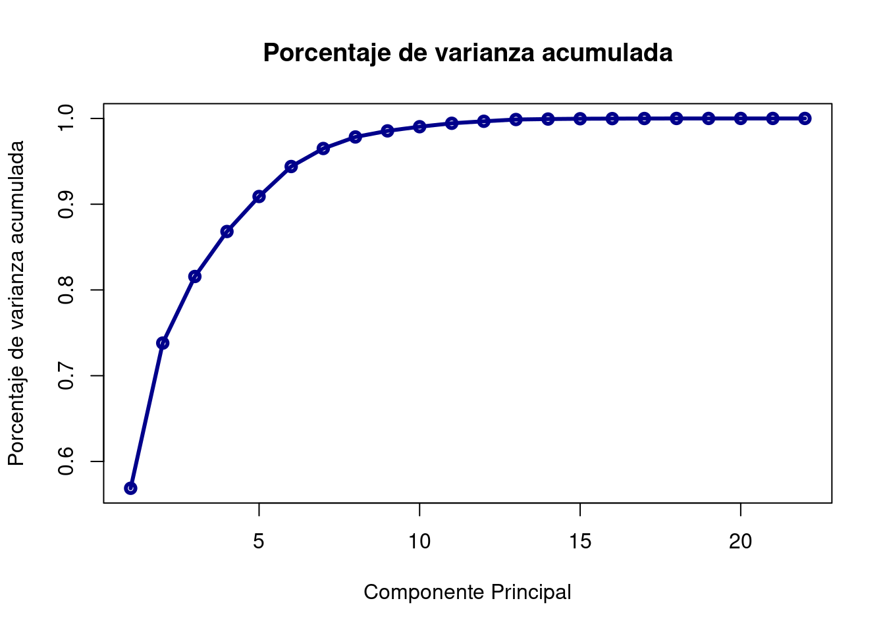
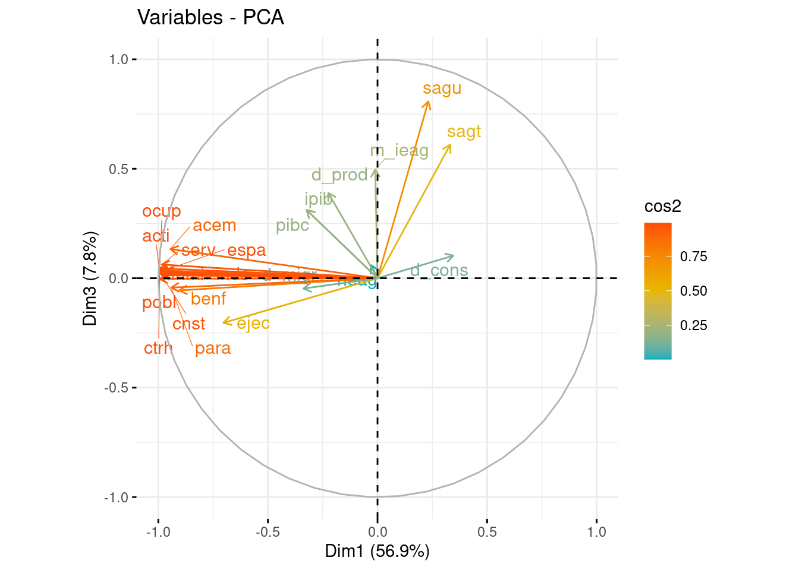
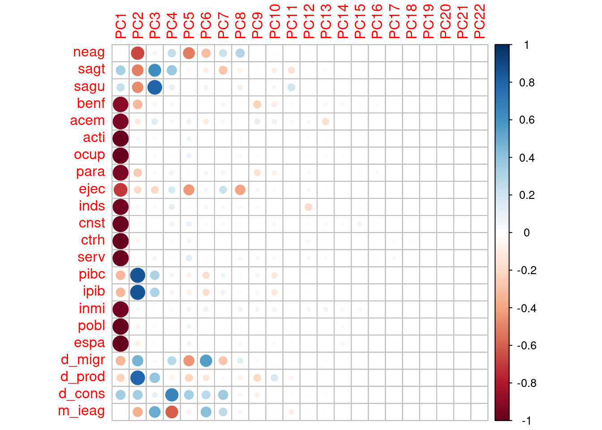
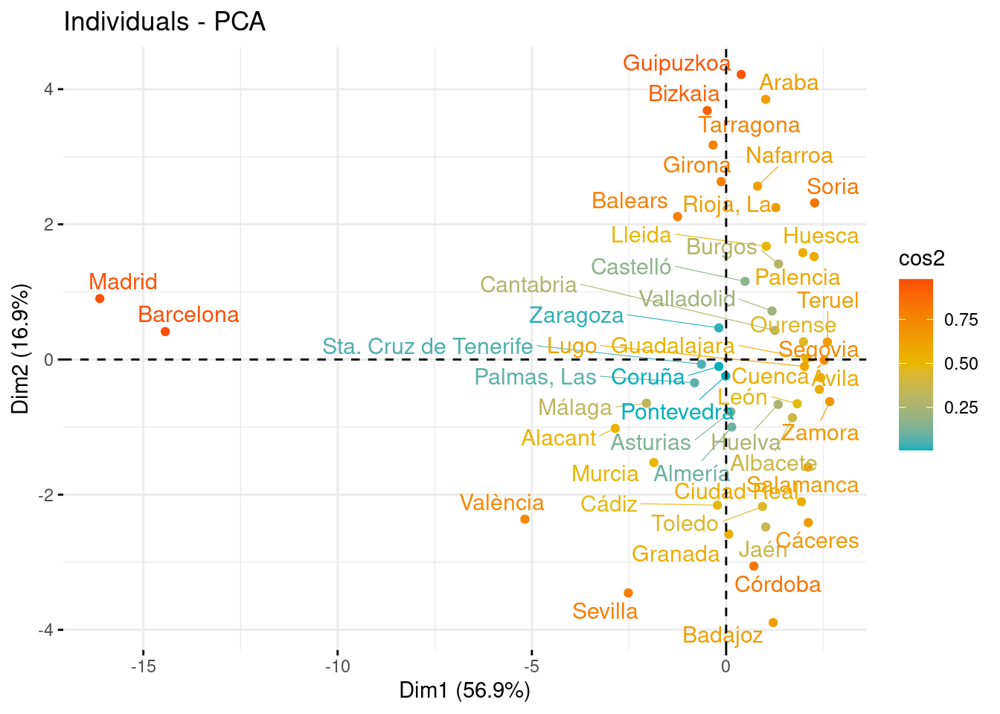
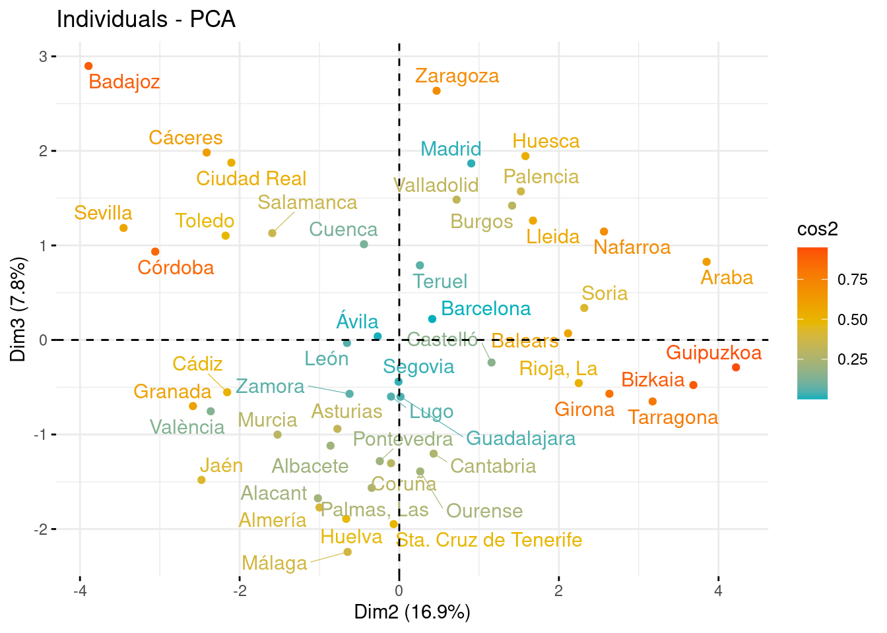

# Librerías
library(readxl) # Para leer los excels
library(dplyr) # Para tratamiento de dataframes
library(ggplot2) # Nice plots
library(factoextra) # fviz_cluster function
library(ggcorrplot) # Para funcion ggcorrplot
library(corrplot) # Para corrplotReducción Dimensionalidad - PCA: provincias_variado
Introducción
A continuación se expondrá como llevar a cabo una Reducción de Dimensionalidad utilizando el método de Componentes Principales. Para ello se utilizará un dataset sobre el que se irán explicando los sucesivos pasos a llevar a cabo.
dataset
En este cuaderno vamos a analizar el dataset llamado variado_provincias.xlsx. Este dataset presenta datos para las provincias, abordando información diversa sobre variables socioeconómicas. Contiene datos como número de explotaciones agrícolas, superficies agrícolas, indicadores de empleo, ejecuciones hipotecarias, empresas por sector, PIB per cápita y datos demográficos.
Concretamente en este dataset tenemos las siguientes variables:
- prov: Nombre de la provincia o ciudad autónoma.
- neag: Número de explotaciones agrícolas (2009).
- sagt: Superficie agrícola total (2009).
- sagu: Superficie agrícola utilizada (2009).
- benf: Beneficiarios de prestaciones por desempleo (2019).
- acem: Importe de todos los programas de Apoyo a la Creación de Empleo (2019).
- acti: Personas en situación laboral activa (2019).
- ocup: Personas en situación laboral de ocupación (2019).
- para: Personas en situación laboral de desempleo (2019).
- ejec: Ejecuciones hipotecarias de fincas urbanas de tipo vivienda (2019).
- inds: Número de empresas dentro del sector industrial (2020).
- cnst: Número de empresas dentro del sector de la construcción (2020).
- ctrh: Número de empresas dentro del sector del Comercio, el transporte y la hostelería (2020).
- serv: Número de empresas dentro del sector servicios (2020).
- pibc: Producto Interior Bruto per Cápita (2018).
- ipib: Indice o ratio de PIB per cápita siendo el valor para el conjunto del Estado Español 1.
- inmi: Personas nacidas fuera de España y nacionalidad distinta a la española que inmigran instalándose en la provincia.
- pobl: Población total independientemente de la nacionalidad.
- espa: Población de nacionalidad española.
- d_migr: Provincia de alta recepción de inmigración.
- d_prod: Provincia con un PIB per cápita superior al del conjunto del Estado.
- d_cons: Provincia con alta dedicación a la construcción.
- m_ieag: Intensividad de explotación agrícola.
Descripción del trabajo a realizar
Se pretende hacer un Análisis de Reducción de la Dimensionalidad empleando el procedimiento de Componentes Principales. El objetivo es conocer que variables independientes son de interés para estudiar las variables socioeconómicas de las provincias y ver cuáles son las más parecidas y las más diferentes.
- Hacer un análisis exploratorio explorando matriz de correlaciones.
- Ver si es necesario escalar/centrar los datos antes de aplicar pca y decidir si hacerlo con matriz de correlaciones o covarianzas.
- Seleccionar un determinado número de componentes y ver como influyen las variables en estas.
- Interpretar componentes y resultados.
Si tomamos demasiadas variables es difícil visualizar relaciones entre ellas. Otro problema que se presenta es la fuerte correlación. Se hace necesario, pues, reducir el número de variables sin perder información. Es importante resaltar el hecho de que el concepto de mayor información se relaciona con el de mayor variabilidad o varianza.
Análisis Exploratorio (EDA)
EDA viene del Inglés Exploratory Data Analysis y son los pasos relativos en los que se exploran las variables para tener una idea de que forma toma el dataset.
Cargar Librerías
Lo primero de todo vamos a cargar las librerías necesarias para ejecutar el resto del código del trabajo:
Lectura datos
Ahora cargamos los datos del excel correspondientes a la pestaña “Datos” y vemos si hay algún NA o algún valor igual a 0 en nuestro dataset. Vemos que no han ningún NA (missing value) en el dataset luego no será necesario realizar ninguna técnica para imputar los missing values o borrar observaciones.
Cargamos entonces el conjunto de datos:
datos <- read_excel("../../../../files/provincias_variado.xlsx", sheet = "Datos")En primer lugar, cargamos los datos que vamos a utilizar. En este caso, se trata de un conjunto de datos compuesto por 52 filas y 23 columnas. Las filas corresponden a las 50 provincias de España, más Ceuta y Melilla.
Antes de comenzar a aplicar la técnica, comprobamos si hay valores faltantes, por si fuera necesario realizar algún preproceso. En este caso, y como vemos a continuación, no hay ningún NA en los datos que vamos a utilizar.
sum(is.na(datos))[1] 0Por otra parte, para tener una noción general que nos permita describir el conjunto con el que vamos a trabajar, podemos extraer su dimensión, el tipo de variables que contiene o qué valores toma cada una.
# Dimensión del conjunto de datos
dim(datos)[1] 52 23# Tipo de variables que contiene
str(datos)tibble [52 × 23] (S3: tbl_df/tbl/data.frame)
$ prov : chr [1:52] "Almería" "Cádiz" "Córdoba" "Granada" ...
$ neag : chr [1:52] "22697" "10069" "36641" "41243" ...
$ sagt : chr [1:52] "327346" "540571" "1024515" "75827" ...
$ sagu : chr [1:52] "234621" "424849" "844019" "625674" ...
$ benf : num [1:52] 38299 75582 62023 60393 41255 ...
$ acem : chr [1:52] "4383367.9299999988" "5611899.9800000004" "9458693.4799999986" "4635804.6700000009" ...
$ acti : num [1:52] 341 563 371 429 250 ...
$ ocup : num [1:52] 281 423 285 334 195 ...
$ para : num [1:52] 67.2 155 95.8 105.6 58.9 ...
$ ejec : num [1:52] 2026 454 193 906 269 ...
$ inds : num [1:52] 2135 2982 4196 3494 1378 ...
$ cnst : num [1:52] 5703 5916 5198 7240 2682 ...
$ ctrh : num [1:52] 18704 27266 20196 24650 11559 ...
$ serv : num [1:52] 17550 27210 18736 26000 10136 ...
$ pibc : num [1:52] 19919 18050 18525 18181 20273 ...
$ ipib : num [1:52] 0.773 0.7 0.719 0.705 0.787 ...
$ inmi : num [1:52] 8013 6119 2966 6628 3830 ...
$ pobl : num [1:52] 716820 1240155 782979 914678 521870 ...
$ espa : num [1:52] 570912 1194830 761876 853709 477032 ...
$ d_migr: num [1:52] 1 0 0 0 0 0 1 0 1 0 ...
$ d_prod: num [1:52] 0 0 0 0 0 0 0 0 1 0 ...
$ d_cons: num [1:52] 0 0 0 0 0 0 0 0 1 1 ...
$ m_ieag: num [1:52] 0 1 1 1 -1 -1 -1 1 0 0 ...# Descripción de las variables
summary(datos) prov neag sagt sagu
Length:52 Length:52 Length:52 Length:52
Class :character Class :character Class :character Class :character
Mode :character Mode :character Mode :character Mode :character
benf acem acti ocup
Min. : 2073 Length:52 Min. : 38.05 Min. : 27.8
1st Qu.: 9124 Class :character 1st Qu.: 149.77 1st Qu.: 133.6
Median : 24705 Mode :character Median : 276.54 Median : 241.2
Mean : 35790 Mean : 442.83 Mean : 380.4
3rd Qu.: 49637 3rd Qu.: 493.32 3rd Qu.: 425.2
Max. :176384 Max. :3467.15 Max. :3098.9
para ejec inds cnst
Min. : 3.50 Min. : 2.0 Min. : 73 Min. : 294
1st Qu.: 17.77 1st Qu.: 64.5 1st Qu.: 1650 1st Qu.: 2752
Median : 42.92 Median : 255.0 Median : 2752 Median : 4992
Mean : 68.86 Mean : 528.6 Mean : 3762 Mean : 8079
3rd Qu.: 77.59 3rd Qu.: 683.2 3rd Qu.: 4196 3rd Qu.: 8314
Max. :411.68 Max. :2859.0 Max. :26217 Max. :60387
ctrh serv pibc ipib
Min. : 1960 Min. : 1518 Min. :18050 Min. :0.7004
1st Qu.: 8479 1st Qu.: 8869 1st Qu.:20268 1st Qu.:0.7864
Median : 15599 Median : 15584 Median :22399 Median :0.8692
Mean : 23349 Mean : 30280 Mean :23960 Mean :0.9297
3rd Qu.: 27100 3rd Qu.: 30358 3rd Qu.:27906 3rd Qu.:1.0829
Max. :158817 Max. :311858 Max. :36404 Max. :1.4126
inmi pobl espa d_migr
Min. : 255 Min. : 84777 Min. : 73221 Min. :0.0
1st Qu.: 1798 1st Qu.: 326390 1st Qu.: 299280 1st Qu.:0.0
Median : 3268 Median : 607321 Median : 559604 Median :0.5
Mean : 9182 Mean : 904350 Mean : 807487 Mean :0.5
3rd Qu.: 8871 3rd Qu.:1025346 3rd Qu.: 917612 3rd Qu.:1.0
Max. :97106 Max. :6663394 Max. :5781575 Max. :1.0
d_prod d_cons m_ieag
Min. :0.0000 Min. :0.0000 Min. :-1.00000
1st Qu.:0.0000 1st Qu.:0.0000 1st Qu.:-1.00000
Median :0.0000 Median :0.0000 Median : 0.00000
Mean :0.3462 Mean :0.4808 Mean : 0.03846
3rd Qu.:1.0000 3rd Qu.:1.0000 3rd Qu.: 1.00000
Max. :1.0000 Max. :1.0000 Max. : 1.00000 Vemos que hay alguna observación como Ceuta y Melilla con datos faltantes, luego los eliminamos y posteriormente convertimos a variable numérica las que han sido consideradas como carácter(debido a los fallos para Ceuta y Melilla) y deberían ser variables numéricas.
# Ceuta y Melilla tienen datos faltantes luego eliminamos observaciones
datos <- datos[datos$prov != "Ceuta", ]
datos <- datos[datos$prov != "Melilla", ]
# Convertimos a variables numéricas
datos$acem <- as.numeric(datos$acem)
datos$neag <- as.numeric(datos$neag)
datos$sagt <- as.numeric(datos$sagt)
datos$sagu <- as.numeric(datos$sagu)Correlación: El que existan correlaciones muy elevadas en el conjunto de datos nos permitirá resumir la información en un menor número de componentes principales, pues éstas explicarán una mayor cantidad de información.
ggcorrplot(cor(datos[, 2:23]), type = "lower", lab = T, show.legend = T, lab_size = 1.9)En este caso, se ha generado un gráfico entre variables, sin tener en cuenta la correlación de la variable consigo misma, pues siempre será del 100%. En términos absolutos, vemos lo siguiente:
Las variables sagt y sagu presentan una correlación alta lo que parece razonable. puesto que ambas están relacionadas con superficies agrícolas.
Por otro lado, se encuentran también bastante correlacionadas entre ellas benf, acem, acti, ocup, para, ejec, inds, cnst y ctrh, las cuales hablan sobre la actividad económica, el mercado laboral y la situación financiera.
Además, las variables inmi, pobl, espa que hablan sobre población se encuentran correlacionadas con las variables socioeconómicas citadas antes.
En general es un dataset que presenta variables con bastante correlación luego esto, probablemente, nos permitirá reducir bastante el numero de variables finales.
Reducción Dimensionalidad: Componentes Principales
Introducción
El Análisis de Componentes Principales (PCA) es una técnica para reducir la complejidad de conjuntos de datos con múltiples variables. Su objetivo es transformar variables correlacionadas en un conjunto menor de dimensiones sin perder la mayor parte de la información original.
Se busca encontrar nuevas variables (componentes) que estén incorrelacionadas y que capturen la máxima variabilidad de los datos. Esto se logra mediante combinaciones lineales de las variables originales. PCA es útil para entender relaciones, reducir dimensiones y manejar la alta correlación entre variables.
Para aplicar PCA, se necesitan datos cuantitativos y es crucial escalar las variables (estandarizar = media cero y varianza uno). Esto garantiza que ninguna variable domine el análisis. Además, se puede trabajar con la matriz de correlaciones para abordar fuertes correlaciones entre variables, manteniendo así la información más relevante del conjunto de datos.
Los pasos generales son:
Estandarización de las variables: Es importante estandarizar las variables numéricas para que tengan media cero y desviación estándar uno. Esto es crucial para que ninguna variable domine el análisis debido a su escala.
Cálculo de la matriz de correlaciones o covarianzas: Dependiendo del enfoque, se puede trabajar con la matriz de correlaciones si se busca abordar fuertes correlaciones entre variables, o con la matriz de covarianzas si se busca la varianza total de las variables.
- NOTA: Aconsejable trabajar siempre con la matriz de correlaciones (a no ser que todas variables estén en las mismas unidades, que se podrá usar la matriz de covarianzas). De no seguir esta nota y usar la matriz de covarianzas, las variables que tienen mayores unidades dominarán la estructura de covarianza, lo que llevará a una representación inexacta de la variabilidad real de los datos.
Descomposición de la matriz: Se descompone la matriz de correlaciones en sus vectores y valores propios. Los valores propios representan la cantidad de varianza explicada por cada componente principal, mientras que los vectores propios (autovectores) determinan la dirección de cada componente en el espacio multidimensional original.
Selección de componentes: Los componentes se ordenan de manera descendente según la cantidad de varianza que explican. Los primeros componentes capturan la mayor variabilidad de los datos y se seleccionan para reducir la dimensionalidad manteniendo la información más relevante.
Transformación de datos: Proyectar los datos originales en el espacio de los componentes principales para obtener las nuevas variables. Estas son combinaciones lineales de las variables originales y son ortogonales entre sí. Esta transformación lineal conserva la mayor parte de la información en un espacio de menor dimensión, lo que facilita el análisis y la visualización de los datos.
Interpretación y visualización: Explorar la importancia de cada componente en términos de la variabilidad explicada. Se pueden interpretar los componentes para comprender qué aspectos de los datos capturan. Si es posible, representar gráficamente los datos en el espacio reducido de los componentes principales para obtener una mejor comprensión de las relaciones entre las observaciones.
Modelo
En las siguientes lineas haremos que la variable prov se ponga como nombre de filas y posteriormente eliminaremos esa variable ya que ya la tendremos como nombre de filas.
prov <- datos$prov
datos <- datos[, -1] # Eliminamos ahora
rownames(datos) <- prov # Como nombres de filas las provinciasEscalamos los datos y calculamos la matriz de varianzas covarianzas, mostramos solo la diagonal (debería ser 1).
datos2 <- scale(datos)
summary(datos2) neag sagt sagu benf
Min. :-1.1411 Min. :-1.3485 Min. :-1.1733 Min. :-0.8942
1st Qu.:-0.6411 1st Qu.:-0.7553 1st Qu.:-0.7755 1st Qu.:-0.6871
Median :-0.3091 Median :-0.1222 Median :-0.1540 Median :-0.2694
Mean : 0.0000 Mean : 0.0000 Mean : 0.0000 Mean : 0.0000
3rd Qu.: 0.5315 3rd Qu.: 0.7954 3rd Qu.: 0.5506 3rd Qu.: 0.3504
Max. : 3.3341 Max. : 2.7318 Max. : 3.0203 Max. : 3.5591
acem acti ocup para
Min. :-0.617472 Min. :-0.67366 Min. :-0.64655 Min. :-0.8301
1st Qu.:-0.479423 1st Qu.:-0.49119 1st Qu.:-0.46230 1st Qu.:-0.6437
Median :-0.283360 Median :-0.26519 Median :-0.27382 Median :-0.3165
Mean : 0.000000 Mean : 0.00000 Mean : 0.00000 Mean : 0.0000
3rd Qu.: 0.007602 3rd Qu.: 0.09655 3rd Qu.: 0.06362 3rd Qu.: 0.1086
Max. : 4.544298 Max. : 4.88489 Max. : 4.94493 Max. : 4.1806
ejec inds cnst ctrh
Min. :-0.7899 Min. :-0.73202 Min. :-0.68723 Min. :-0.72021
1st Qu.:-0.6860 1st Qu.:-0.47413 1st Qu.:-0.48766 1st Qu.:-0.50005
Median :-0.4180 Median :-0.23058 Median :-0.29068 Median :-0.27136
Mean : 0.0000 Mean : 0.00000 Mean : 0.00000 Mean : 0.00000
3rd Qu.: 0.3064 3rd Qu.: 0.06218 3rd Qu.: 0.02612 3rd Qu.: 0.09904
Max. : 3.3679 Max. : 4.80833 Max. : 4.72343 Max. : 4.40407
serv pibc ipib inmi
Min. :-0.53903 Min. :-1.2490 Min. :-1.2490 Min. :-0.531467
1st Qu.:-0.41091 1st Qu.:-0.7794 1st Qu.:-0.7794 1st Qu.:-0.441624
Median :-0.27930 Median :-0.3078 Median :-0.3078 Median :-0.345592
Mean : 0.00000 Mean : 0.0000 Mean : 0.0000 Mean : 0.000000
3rd Qu.:-0.01928 3rd Qu.: 0.7876 3rd Qu.: 0.7876 3rd Qu.:-0.007037
Max. : 5.16964 Max. : 2.5159 Max. : 2.5159 Max. : 5.113423
pobl espa d_migr d_prod
Min. :-0.70681 Min. :-0.72798 Min. :-0.9899 Min. :-0.7425
1st Qu.:-0.50535 1st Qu.:-0.50227 1st Qu.:-0.9899 1st Qu.:-0.7425
Median :-0.24426 Median :-0.24694 Median : 0.0000 Median :-0.7425
Mean : 0.00000 Mean : 0.00000 Mean : 0.0000 Mean : 0.0000
3rd Qu.: 0.07776 3rd Qu.: 0.09517 3rd Qu.: 0.9899 3rd Qu.: 1.3199
Max. : 4.77031 Max. : 4.76444 Max. : 0.9899 Max. : 1.3199
d_cons m_ieag
Min. :-0.9899 Min. :-1.2
1st Qu.:-0.9899 1st Qu.:-1.2
Median : 0.0000 Median : 0.0
Mean : 0.0000 Mean : 0.0
3rd Qu.: 0.9899 3rd Qu.: 1.2
Max. : 0.9899 Max. : 1.2 diag(var(datos2)) neag sagt sagu benf acem acti ocup para ejec inds cnst
1 1 1 1 1 1 1 1 1 1 1
ctrh serv pibc ipib inmi pobl espa d_migr d_prod d_cons m_ieag
1 1 1 1 1 1 1 1 1 1 1 Aplicamos funcion PCA, notar que en este caso no haría falta los argumentos SCALE=TRUE y CENTER=TRUE puesto que ya hemos escalado dos datos en un paso previo. Por defecto en la función viene el valor de SCALE=FALSE y CENTER=TRUE.
pca <- prcomp(datos2, center = TRUE, scale = TRUE) # Scale=TCalculamos los coeficientes de la ecuación para cada componente principal (Autovectores)
pca$rotation PC1 PC2 PC3 PC4 PC5
neag -0.008203669 -0.343875267 0.04530181 0.225703033 -0.54756484
sagt 0.093777760 -0.260685812 0.46692515 0.349015155 0.03406050
sagu 0.065567030 -0.244985221 0.61799140 0.097155168 0.02080531
benf -0.255547541 -0.169583054 -0.04259558 -0.052834575 -0.02213471
acem -0.267132603 -0.057835771 0.10183034 0.045780063 0.08580010
acti -0.281063977 -0.023526873 0.02628693 0.007544727 0.07970706
ocup -0.280841146 -0.008682980 0.03451402 0.018319293 0.08680006
para -0.266087680 -0.130432450 -0.03284853 -0.075401384 0.02454609
ejec -0.198849271 -0.099263733 -0.15594933 0.165381576 -0.45691677
inds -0.273655544 -0.025426864 0.02639828 0.104890737 -0.03003321
cnst -0.278652744 0.009442489 0.01045498 0.065833031 0.09797438
ctrh -0.280865532 -0.034425301 -0.00195234 0.028043173 0.06635140
serv -0.278225349 0.001691252 0.04777668 0.010808461 0.13573865
pibc -0.091357800 0.443739119 0.23824009 -0.056976256 -0.09063192
ipib -0.091357800 0.443739119 0.23824009 -0.056976256 -0.09063192
inmi -0.276330714 0.024554052 0.01362495 0.036421615 0.07966626
pobl -0.281059234 -0.031986886 0.01745440 0.009483160 0.07141424
espa -0.279916693 -0.041995882 0.02242889 -0.001685268 0.07871296
d_migr -0.095504531 0.238686852 -0.03617703 0.252839323 -0.46455287
d_prod -0.063526272 0.414171144 0.29841325 -0.067396952 -0.23173719
d_cons 0.097819045 0.179380331 0.07889970 0.608464813 0.35133940
m_ieag -0.003008870 -0.185386385 0.37995131 -0.562708171 -0.08435159
PC6 PC7 PC8 PC9 PC10
neag -0.3439637614 0.3181931984 0.546633074 -0.042234946 0.061127320
sagt -0.1100455393 -0.4006638868 -0.117615869 0.039275911 -0.279051822
sagu 0.0817036075 -0.0222447662 -0.171395080 0.026316824 0.157218184
benf 0.0137041574 -0.0865694329 -0.029661792 -0.559030776 -0.309307488
acem -0.1178721638 -0.0707233983 -0.044543831 0.298833863 0.257966427
acti 0.0076332457 -0.0037803382 0.059270911 0.005709252 -0.006149006
ocup -0.0006559353 0.0075506538 0.064643582 0.060016993 0.027810869
para 0.0727358249 -0.0886662722 0.017717750 -0.382779446 -0.248294230
ejec 0.0680105833 0.3147912020 -0.719248381 0.125707090 -0.074181682
inds -0.0628750541 0.0694423188 -0.072739992 0.084531854 0.006424920
cnst 0.0292065917 0.0536723970 0.048498272 0.056468107 0.155876623
ctrh -0.0048832446 0.0017937693 -0.009848608 -0.004766928 0.012155773
serv -0.0012741045 -0.0048713916 0.087208561 0.112787351 0.132475098
pibc -0.1948383804 0.1087456789 0.051279330 0.143863566 -0.368945603
ipib -0.1948383804 0.1087456789 0.051279330 0.143863566 -0.368945603
inmi 0.0914218309 -0.0061780392 0.133400292 0.163491527 0.196306238
pobl -0.0080275067 -0.0002658156 0.043324687 -0.007132425 -0.043975544
espa -0.0277124999 0.0033821074 0.059065585 -0.031254895 -0.097557785
d_migr 0.6343714682 -0.4062202201 0.228793096 0.091421146 -0.016735762
d_prod -0.1578225102 -0.0552752059 -0.137948082 -0.524360180 0.542818315
d_cons 0.3051347838 0.5279990672 0.073643342 -0.224962399 -0.032322918
m_ieag 0.4779735058 0.3740589092 0.096068698 0.045373694 -0.057025896
PC11 PC12 PC13 PC14 PC15
neag -0.0011642406 0.0535876293 -0.003587603 0.008702605 0.0088207614
sagt -0.5384363343 0.0201525721 0.152777613 0.016949628 0.0368195759
sagu 0.6913268975 -0.0009838613 0.025612818 -0.049154388 -0.0235504136
benf 0.0778059553 0.0166171043 -0.223463020 -0.437661655 0.1844294743
acem -0.1434755408 0.2115156338 -0.800851717 -0.079880449 -0.0085045450
acti 0.0090474886 0.0899730086 0.105952933 0.167775346 -0.0310804490
ocup 0.0002516397 0.0802453472 0.125817085 0.182996570 0.0004190218
para 0.0702432830 0.1639853286 -0.045396107 0.092039239 -0.3246330860
ejec -0.0518914404 0.1874420729 0.093989284 0.015986936 0.0139851888
inds -0.0525696075 -0.8441067042 -0.060276232 -0.068972403 -0.3237750008
cnst -0.0311681278 -0.1282127274 0.223356927 -0.238665029 0.7194147327
ctrh 0.0323340838 -0.1997179251 -0.010190351 0.020915853 0.1254129755
serv -0.0254289130 0.1911372018 0.149746563 0.048866433 0.0410875909
pibc 0.0767242340 0.0474288876 -0.024309177 -0.084114391 0.0154515186
ipib 0.0767242340 0.0474288876 -0.024309177 -0.084114391 0.0154515186
inmi -0.0800589037 0.2402968139 0.362203691 -0.540082596 -0.4584377875
pobl 0.0367541275 0.0262302384 0.084541442 0.308217121 -0.0003495038
espa 0.0670822639 0.0268354928 0.021513582 0.499046521 0.0288103770
d_migr 0.0827407189 -0.0361408516 -0.101217861 0.050613416 0.0473954559
d_prod -0.2132910478 -0.0034363236 0.042725328 0.105011778 -0.0347451470
d_cons -0.0919821263 0.0468918077 -0.127529588 0.021556443 -0.0425306346
m_ieag -0.3279387644 -0.0510319010 -0.048713110 0.021136187 0.0289352769
PC16 PC17 PC18 PC19 PC20
neag 0.028280641 0.031270874 0.003937319 -0.0113906345 0.003567678
sagt 0.014486739 0.011924533 0.025953716 -0.0002686759 -0.006380276
sagu 0.007013293 -0.012975035 -0.012380037 0.0026777669 0.001585427
benf -0.441599019 -0.066918737 0.052027801 -0.0038209310 0.002160965
acem 0.085530140 -0.082530476 -0.015013315 0.0294884298 0.019430189
acti -0.072631066 -0.183444129 -0.191019557 -0.4706669141 -0.058428689
ocup -0.161635945 -0.214744834 -0.189329803 -0.5529285131 -0.041279368
para 0.654490486 0.133100176 -0.277084961 0.0765155301 -0.007649426
ejec -0.010062902 0.015277930 -0.006916257 0.0112412604 -0.014062637
inds -0.067715629 -0.027844625 -0.221419616 0.0877284129 -0.005087322
cnst 0.369077443 -0.186531284 -0.184396274 0.1666115674 -0.006561403
ctrh 0.207940901 0.494244724 0.665266888 -0.3445469570 -0.091813887
serv -0.348805373 0.695217496 -0.373281347 0.2321195460 -0.044270279
pibc 0.030506268 0.016345407 -0.006390075 0.0034842214 0.001992897
ipib 0.030506268 0.016345407 -0.006390075 0.0034842214 0.001992897
inmi 0.005747106 -0.194045761 0.261419680 0.1294941066 -0.060912866
pobl -0.090754164 -0.118341886 0.211162818 0.2094261635 0.834022532
espa -0.140389714 -0.271730744 0.260203084 0.4438655342 -0.533269338
d_migr -0.029490415 0.015541335 -0.010622030 0.0021557611 -0.001170864
d_prod -0.005451515 -0.011843054 0.027909507 0.0001228453 -0.004411171
d_cons -0.004407126 0.008864201 0.008448205 -0.0035154671 0.003884002
m_ieag -0.016990069 0.006379824 0.020955305 -0.0026142462 0.002256564
PC21 PC22
neag 2.325632e-04 -9.424210e-17
sagt -2.289433e-04 6.983831e-17
sagu 6.422103e-05 7.280692e-17
benf -7.159194e-03 -1.307441e-16
acem 4.356527e-04 -1.752889e-16
acti 7.488779e-01 -5.137830e-15
ocup -6.573444e-01 -1.534483e-15
para -8.170016e-02 9.325957e-17
ejec -2.769442e-04 -9.508544e-18
inds 1.329953e-03 4.498068e-16
cnst -3.981757e-03 5.246307e-16
ctrh -1.114550e-05 -2.453126e-15
serv 3.314180e-03 5.811103e-16
pibc -1.612389e-04 -7.071068e-01
ipib -1.612389e-04 7.071068e-01
inmi -4.256775e-03 1.455391e-15
pobl 9.689444e-03 5.405497e-15
espa -1.459524e-02 9.795462e-16
d_migr 1.544843e-04 -4.905046e-17
d_prod 1.396581e-04 -8.815050e-17
d_cons 1.484576e-04 -1.175607e-16
m_ieag 1.993842e-04 -1.266090e-17Podemos observar aquí nuestras variables en el nuevo sistema de cordenadas (las componentes principales), dando lugar a ecuaciones de cada eje como combinación lineal del total de variables. Analizar el vector que crea cada componente y cuáles son los pesos que tienen las variables en cada componente, ayuda a interpretar qué tipo de información recoge cada una de ellas.
Extraemos las nuevas coordenadas de los individuos (puntuaciones)
Además, podemos ver las puntuaciones, que son las coordenadas de cada observación original (provincia) sobre los nuevos ejes construidos (componentes principales). Esto corresponde a un cambio de coordenadas bajo el paradigma del Álgebra Lineal.
pca$x PC1 PC2 PC3 PC4
Almería 0.14401049 -0.999448416 -1.77192463 -0.118079207
Cádiz -0.22289523 -2.155904201 -0.55296161 -1.681361510
Córdoba 0.71449576 -3.057392226 0.93475214 -0.756650372
Granada 0.06790381 -2.584691109 -0.69960531 -1.361734406
Huelva 1.33834239 -0.664855530 -1.89207804 -0.457302506
Jaén 1.01640243 -2.477648245 -1.48041105 0.660901059
Málaga -2.05022515 -0.647035376 -2.24235793 -0.007862319
Sevilla -2.51838871 -3.454148645 1.18516391 -0.602085790
Huesca 1.97302285 1.580980476 1.94498310 0.956907786
Teruel 2.60699292 0.258668522 0.78934459 0.287302608
Zaragoza -0.18690810 0.467955728 2.63600211 -0.601906654
Asturias 0.12191259 -0.774813465 -0.94021810 -0.128738650
Balears -1.24991745 2.114845576 0.07006078 0.300984950
Palmas, Las -0.81168302 -0.345405772 -1.56426460 -1.821112545
Sta. Cruz de Tenerife -0.63600483 -0.069946598 -1.94786926 -1.052209647
Cantabria 1.25502202 0.430431827 -1.20251616 0.663447751
Ávila 2.43630213 -0.270369492 0.03781298 0.025430154
Burgos 1.34815470 1.413677429 1.42118486 -2.278312648
León 1.83063398 -0.654370228 -0.03188379 1.354119970
Palencia 2.26422590 1.523585181 1.57162124 -0.858533967
Salamanca 2.10888368 -1.591010860 1.13009061 -1.212836056
Segovia 2.52541173 -0.009549252 -0.44096012 0.037138818
Soria 2.27848934 2.318162660 0.33886677 1.040220677
Valladolid 1.18172729 0.717811692 1.48437900 -1.854683128
Zamora 2.66712842 -0.622525273 -0.56993495 1.106715098
Albacete 1.70526297 -0.861167392 -1.11820623 0.103679629
Ciudad Real 1.93806454 -2.103835255 1.87532831 1.535218859
Cuenca 2.39881775 -0.442048801 1.01283707 1.325191706
Guadalajara 2.06687855 0.015477628 -0.60047816 0.686257932
Toledo 0.93628031 -2.175445418 1.10303675 1.302358185
Barcelona -14.43502394 0.413154985 0.22204504 1.201208938
Girona -0.12932483 2.632853916 -0.56893082 0.954778051
Lleida 1.03296497 1.675225165 1.26233986 0.948179545
Tarragona -0.33434264 3.173908867 -0.65007300 0.886774348
Alacant -2.85383440 -1.018910215 -1.67455504 1.193787578
Castelló 0.48607692 1.156090115 -0.23849448 -1.126779290
València -5.17978283 -2.362336409 -0.75443785 1.041869611
Badajoz 1.21111842 -3.893142228 2.89809711 0.024951961
Cáceres 2.11564555 -2.413147162 1.98230441 0.656030710
Coruña -0.18622973 -0.103238763 -1.30365527 1.011604182
Lugo 2.01680666 -0.103425232 -0.59904942 0.172112826
Ourense 1.99027889 0.262567528 -1.39082866 -0.274850133
Pontevedra -0.01002219 -0.243940971 -1.28185296 -2.239128490
Madrid -16.12140103 0.902158686 1.86756185 -0.849950394
Murcia -1.85947052 -1.524920020 -1.00131095 0.373358496
Nafarroa 0.80889134 2.565210494 1.14689919 1.343295884
Araba 1.01810652 3.850363575 0.82656999 -2.283694207
Bizkaia -0.48643729 3.684450868 -0.47675186 0.391112994
Guipuzkoa 0.38787288 4.218645911 -0.28984018 0.328997700
Rioja, La 1.27976318 2.248445727 -0.45583122 -0.346126087
PC5 PC6 PC7 PC8
Almería -1.840263396 0.886133457 -0.056662841 -1.085204437
Cádiz 0.756066742 0.517666990 -0.257598155 -0.359648407
Córdoba -0.154830039 -0.290122082 -0.188321638 0.404000171
Granada -0.798198585 -0.026545672 1.149542692 0.284650740
Huelva 0.604130564 -1.018121203 -0.945005131 -0.235238633
Jaén -1.197458468 -2.262710389 -0.161631350 1.566272311
Málaga 0.620812876 0.700955115 -1.842471247 -0.007950675
Sevilla -0.019022190 -0.104760288 -0.139214460 -0.747133714
Huesca -0.527287103 0.344718514 -0.414019387 0.131654763
Teruel 1.453666345 -0.006398788 0.187887840 -0.554265574
Zaragoza -1.349476887 0.105854042 -0.798490696 0.308599256
Asturias 0.417186834 -1.473557954 -0.550880628 0.078461481
Balears 0.001180814 0.666788598 0.329707870 0.465098024
Palmas, Las 0.037166453 1.711105673 -0.527767935 0.471516283
Sta. Cruz de Tenerife 0.016664519 1.022360024 -0.892992082 0.608069656
Cantabria 1.288344159 -0.617367455 0.502612810 -0.241069794
Ávila 0.248360446 2.042086195 0.137871607 0.487495687
Burgos -0.381804337 -0.738620046 0.718334373 -0.227140181
León 1.257000727 -0.643998755 -0.116416370 -0.380177406
Palencia 0.829595024 0.114485013 0.847358158 -0.517599965
Salamanca 0.448436046 0.054743227 -0.366775698 -0.332977811
Segovia 1.277456309 0.115359511 0.615321278 -0.073372300
Soria -0.056124324 0.169805115 -0.789668153 -0.089107637
Valladolid -0.015817826 -0.697262679 -0.029660364 -0.308577787
Zamora 1.308369747 -0.418113227 -0.097555340 -0.215479343
Albacete 0.345562465 -1.475724995 -1.118613908 0.025375203
Ciudad Real 0.395304638 -0.562800701 0.271786652 0.218761429
Cuenca -0.017585746 0.980944273 -0.494104701 0.543383475
Guadalajara 0.383219616 1.568482029 -0.287585588 -0.029561787
Toledo -0.839826590 1.690680064 0.391614591 0.091012766
Barcelona 0.454037480 -0.801543343 -0.369706138 -1.249723637
Girona -0.375599413 0.137947557 0.086249917 -0.521881814
Lleida -1.046605240 0.314339312 0.254279681 -0.236157269
Tarragona -0.649585007 0.032463340 0.252586920 -0.988335272
Alacant -0.406396995 1.478312711 1.024738902 -0.090312256
Castelló -1.415190361 -1.556676980 0.891367928 -0.741857270
València -2.758813451 -0.520886030 0.941295532 0.580421262
Badajoz -0.054632531 -0.389481396 -0.908762690 -0.155223276
Cáceres 0.737089594 0.404934088 0.444874558 -0.072856327
Coruña 0.707018419 -1.016559755 1.095008250 0.324070476
Lugo 0.665197372 -0.345710848 1.163656474 0.640596538
Ourense 1.147913834 0.051167996 1.087178660 0.376159086
Pontevedra 0.726154514 0.311651887 0.553082995 -0.430980108
Madrid 1.757215127 0.291809278 0.176676476 1.131436202
Murcia -1.808383985 0.520085843 -0.007004105 -0.719125224
Nafarroa -0.338398466 -0.419173713 -0.465700947 0.400354360
Araba -1.232869320 0.025797808 0.018873931 0.536342782
Bizkaia 0.322389139 -0.028605796 -0.051739371 0.474788319
Guipuzkoa 0.045977400 -0.245898878 0.064907831 0.396027192
Rioja, La -0.967346938 -0.600036686 -1.328467005 0.066410442
PC9 PC10 PC11 PC12
Almería 0.47579425 0.031379967 0.067687517 0.440758111
Cádiz -0.88921529 -0.264584186 -0.124231333 0.033726501
Córdoba -0.39479499 -0.000661029 -0.040609116 -0.297038584
Granada -0.46355596 0.508736899 0.721187555 -0.007275494
Huelva -0.14893625 -0.145514646 -0.221190664 0.137937169
Jaén -0.36287568 0.185979503 -0.576208796 0.056542425
Málaga -0.39046858 0.099209284 0.141258917 0.070688374
Sevilla -1.17384978 -1.016992593 0.239923800 0.134541552
Huesca -0.21214549 0.101260268 -0.150619415 0.096337563
Teruel 0.52834561 -0.606954667 0.049351575 0.088751882
Zaragoza 0.25974911 0.165877434 -0.121559515 -0.123259262
Asturias 0.42069749 0.019092483 0.444795169 0.045736154
Balears -0.64452829 0.348524662 -0.298421945 -0.026367015
Palmas, Las -0.12289782 -0.124598530 -0.100568801 0.087594118
Sta. Cruz de Tenerife 0.07040546 0.094335764 0.187721857 0.171260482
Cantabria 0.25800144 -0.087050774 0.210415333 0.185091734
Ávila 0.34751023 0.183158228 -0.235315445 -0.100906679
Burgos 0.08982974 0.506075200 0.783906107 -0.025064155
León 0.18775816 0.017027705 0.160106912 0.080944591
Palencia -0.40799024 0.278420589 -0.586503742 0.081427618
Salamanca 0.66245322 0.069013989 0.115793263 -0.192557299
Segovia 0.26377553 0.045433780 -0.055500728 0.042629686
Soria -0.39548961 0.448084300 0.126778938 0.129563909
Valladolid -0.04441208 0.471043203 -0.376241813 -0.057844901
Zamora 0.03898128 0.344062280 0.216171634 0.039450260
Albacete 0.41689554 -0.203739064 -0.789071275 -0.140619948
Ciudad Real -0.01441631 -0.262018267 0.142942750 0.078037280
Cuenca 0.46824496 -0.214039364 0.265163896 -0.026486841
Guadalajara 0.36980149 0.217380824 -0.007654602 0.137350919
Toledo 0.06924745 0.088362452 -0.235341252 -0.183538227
Barcelona 0.28370357 0.308185056 -0.168211407 -0.655783799
Girona -0.30877670 0.334107366 0.019395725 0.139027420
Lleida -0.13038594 0.095264785 -0.229996593 0.220331404
Tarragona -0.22490139 -0.329658271 -0.223568581 0.457355703
Alacant -0.46358071 -0.007011361 -0.053955398 -0.572715113
Castelló -0.17673516 0.144756598 -0.238364848 0.172055689
València 0.45311372 -0.243562961 0.034737735 0.144613633
Badajoz 0.07982642 0.101819643 0.233372242 -0.025940982
Cáceres -0.06054827 0.028835927 -0.267002137 0.078212742
Coruña 0.08743362 -0.100109590 0.229686348 0.014155849
Lugo 0.21088527 -0.054371431 -0.065019501 0.002428980
Ourense 0.10922977 0.164311446 -0.155325711 -0.092258760
Pontevedra 0.42949388 -0.098396703 -0.232400919 -0.387139657
Madrid 0.28638213 0.086440463 -0.027846605 0.638415149
Murcia 0.48492509 -0.145308861 0.144571521 -0.039782422
Nafarroa -0.27003359 -0.280474425 0.291341255 -0.191965449
Araba 0.58117654 -0.961482155 -0.153581965 -0.125305920
Bizkaia -0.52802332 -0.323376848 0.333688501 -0.293725334
Guipuzkoa -0.14881051 -0.514567563 0.319057881 -0.323540722
Rioja, La 0.04371102 0.498293190 0.255255677 -0.115850337
PC13 PC14 PC15 PC16
Almería 0.243256304 0.023197548 0.0918354752 -0.0864457317
Cádiz 0.058838642 0.226679222 -0.1334812512 0.0276735027
Córdoba -0.082782684 -0.093383607 -0.0209288936 -0.0699858197
Granada 0.074704621 -0.046549251 -0.0108945631 -0.0205651179
Huelva 0.193895641 -0.109812043 -0.0604883225 -0.1312752870
Jaén -0.155290169 0.008539545 0.0193559326 -0.0472725390
Málaga 0.113937586 -0.104167043 0.2347149437 0.0032440254
Sevilla -0.279142401 0.049771125 0.0483271642 -0.0807590026
Huesca -0.015187386 0.045845707 -0.0038943232 -0.0000289523
Teruel 0.114446897 -0.183100299 -0.0591818945 0.0155027336
Zaragoza -0.007316974 0.079574879 0.0135980360 0.0090214890
Asturias -0.103268919 0.149765834 0.0974963950 0.1246925963
Balears 0.067412217 -0.312786181 0.2527344599 0.0706809591
Palmas, Las -0.340577799 0.054812963 -0.0685313116 0.2297666058
Sta. Cruz de Tenerife -0.089252701 -0.226520085 -0.2164235530 0.0369171135
Cantabria -0.288407669 -0.006698810 0.0218048670 -0.0116105406
Ávila -0.220370725 0.115376013 0.0387523918 -0.1064725169
Burgos -0.057614449 -0.122168057 -0.0236274156 0.0083248286
León -0.039545102 0.017638522 -0.0021933969 0.0646999008
Palencia -0.098517836 0.007542103 -0.0942570636 -0.0065010393
Salamanca 0.358592918 -0.031080675 0.0197916061 -0.0209360706
Segovia -0.033822299 -0.047194691 -0.0847764781 -0.0225991634
Soria -0.060867274 0.072913264 -0.1017211904 -0.0485846831
Valladolid -0.037886772 0.123702005 0.0056208119 0.0199385765
Zamora 0.150489581 0.020646501 -0.1047602744 -0.0060099717
Albacete 0.306045350 0.001369938 -0.0327167190 0.0471789455
Ciudad Real 0.271635520 -0.030959851 -0.0471297014 0.1080990728
Cuenca -0.003677958 -0.018001270 0.0117999112 -0.0107916798
Guadalajara -0.286227495 0.108304062 -0.0026570347 -0.0936267361
Toledo 0.159341618 0.157705076 0.0460566429 0.0480747498
Barcelona -0.461872434 -0.058871190 -0.0612856830 0.0010192472
Girona -0.145867549 -0.048662093 0.0830727014 0.0002817880
Lleida -0.062957303 0.018103580 -0.0006148988 0.0334752851
Tarragona -0.165055214 -0.087586282 -0.0240318943 0.0440645931
Alacant 0.532278711 -0.155960165 -0.0775878862 0.0044472527
Castelló 0.393719215 0.040820347 0.0133198844 0.0376363920
València -0.316885416 -0.023996092 -0.1237916806 0.0011157925
Badajoz -0.205176771 -0.144432481 0.0809322042 0.0219498492
Cáceres -0.082734251 -0.063117768 0.0548941442 -0.0157765960
Coruña -0.128303420 0.148392486 0.2077448796 0.0002856532
Lugo -0.023708395 -0.019398422 -0.0002416294 -0.0031629889
Ourense -0.175629670 -0.015063975 -0.0540800888 -0.0168161067
Pontevedra -0.016956952 0.103058755 0.1502294457 -0.0200890991
Madrid 0.431138869 0.079723890 -0.0020457785 -0.0507573883
Murcia 0.248271351 0.104235265 -0.0173682690 0.0310126071
Nafarroa 0.241538000 0.014325265 -0.0579872456 -0.0109843279
Araba -0.130451064 -0.145799946 0.0592446243 -0.0268608784
Bizkaia 0.191397603 0.224462209 0.0267948573 0.0258592618
Guipuzkoa -0.040766676 0.043677863 -0.0368317525 -0.0628978921
Rioja, La 0.005181081 0.055126309 -0.0545911850 -0.0441526926
PC17 PC18 PC19 PC20
Almería 0.0290603932 0.023297482 -0.0261788636 0.0021592582
Cádiz -0.0573358452 0.020537862 0.0242553850 0.0110931846
Córdoba -0.0116373353 -0.047303902 0.0094304309 -0.0009709308
Granada 0.0555551741 -0.021137305 0.0114845390 -0.0057839489
Huelva -0.0668103091 0.006994846 -0.0204765617 0.0029332837
Jaén 0.0269862219 -0.010160811 -0.0076101351 0.0132002321
Málaga 0.0971477762 0.095364029 0.0321342957 0.0109561717
Sevilla 0.0298117912 -0.049693063 -0.0176335912 -0.0117112244
Huesca 0.0671876017 0.018546486 0.0053989330 -0.0051672590
Teruel 0.0183776583 -0.016495600 0.0101574794 0.0004769062
Zaragoza -0.0759782539 0.033006164 -0.0176598284 0.0123128589
Asturias -0.0037136818 0.020392665 0.0183658100 0.0059505213
Balears -0.1270417678 -0.050749115 -0.0079195331 -0.0104075047
Palmas, Las 0.0653780205 -0.066881548 -0.0256405118 0.0043369059
Sta. Cruz de Tenerife -0.0506080490 0.076044887 -0.0313227418 -0.0219382357
Cantabria -0.0516286389 -0.021123954 -0.0042540018 0.0099561552
Ávila 0.0367798461 0.006988128 0.0028674196 0.0011440612
Burgos -0.0065373066 -0.009819506 0.0073406099 0.0081256418
León -0.0291366556 -0.006688017 0.0051578876 0.0001156972
Palencia 0.0008175788 0.067492861 0.0101435389 0.0017472671
Salamanca -0.0030847479 0.007636628 0.0089367166 -0.0086519231
Segovia 0.0096177927 -0.015281774 -0.0127344868 0.0047183153
Soria 0.0377207743 -0.006429529 0.0117062106 -0.0103247456
Valladolid -0.0436617085 0.030107916 -0.0208394860 0.0039401719
Zamora 0.0025741863 -0.027819156 0.0040603510 -0.0037825961
Albacete 0.0111057266 -0.055612628 0.0134175239 -0.0120152120
Ciudad Real 0.0353877687 0.010403098 -0.0121534524 0.0027465264
Cuenca 0.0614068055 -0.008334674 -0.0095199686 -0.0012502887
Guadalajara -0.0459104329 -0.045364678 -0.0189013014 0.0062093887
Toledo -0.0213896936 -0.044381177 0.0231274520 -0.0095785929
Barcelona 0.0596478456 0.008450191 -0.0197780746 -0.0000885052
Girona 0.0049317323 -0.051576982 0.0094151185 0.0071898729
Lleida 0.0593307112 0.026020817 -0.0118541063 -0.0061720694
Tarragona -0.0447424817 0.005296798 0.0359760839 0.0009822919
Alacant 0.0142503120 0.006607664 -0.0024707108 0.0163688078
Castelló 0.0889779142 -0.013551168 -0.0218059226 -0.0039166944
València -0.0506912239 0.058879432 0.0400020927 -0.0108557448
Badajoz -0.0450806290 0.021763198 -0.0006869546 0.0047945629
Cáceres 0.0016302717 0.044902961 0.0016832324 0.0026281758
Coruña -0.0232121134 0.011928371 -0.0272604925 -0.0117490811
Lugo 0.0558768195 0.038304089 -0.0248784625 0.0016975742
Ourense 0.0127508472 -0.009264926 0.0274629751 0.0054288723
Pontevedra -0.0085150921 0.023858922 0.0184202969 -0.0209693638
Madrid -0.0014938079 -0.035053495 0.0093977092 0.0014234824
Murcia -0.0942960417 -0.029298396 -0.0092425686 0.0123501848
Nafarroa -0.0069749897 0.007711255 -0.0050800672 -0.0034177350
Araba 0.0432025338 -0.016301915 0.0083365903 0.0098990113
Bizkaia -0.0576446976 0.069886689 -0.0144708332 -0.0031350775
Guipuzkoa -0.0104548562 -0.010284076 0.0043133862 0.0035820479
Rioja, La 0.0120662556 -0.071816043 0.0173805884 -0.0065806985
PC21 PC22
Almería -1.769168e-03 -5.659712e-17
Cádiz -4.102063e-05 2.091484e-16
Córdoba -2.930831e-03 -1.345576e-16
Granada -1.380124e-03 6.235390e-17
Huelva -7.879173e-04 8.023850e-18
Jaén 1.165412e-04 -3.469890e-16
Málaga 4.558678e-04 3.687160e-16
Sevilla 1.516729e-03 -4.816864e-16
Huesca 8.136195e-04 2.157779e-16
Teruel -5.043557e-04 3.653912e-16
Zaragoza -7.124357e-04 3.948470e-16
Asturias -3.586382e-04 1.089640e-16
Balears 3.003175e-04 -7.137619e-16
Palmas, Las -6.451246e-04 -5.453732e-16
Sta. Cruz de Tenerife 2.909563e-04 6.114977e-17
Cantabria -4.717381e-04 2.658787e-17
Ávila 9.427784e-04 8.880847e-17
Burgos 1.045217e-03 1.694051e-16
León 8.818798e-05 2.593243e-16
Palencia 1.343752e-04 1.586339e-16
Salamanca -4.823569e-04 2.670583e-16
Segovia 3.979363e-04 -1.524239e-16
Soria 4.416088e-04 -3.839118e-16
Valladolid 9.652706e-04 3.131621e-16
Zamora 3.077992e-04 2.815086e-16
Albacete 5.132887e-04 1.240523e-16
Ciudad Real 4.625934e-04 2.318143e-16
Cuenca 5.127048e-04 1.369508e-16
Guadalajara 8.714265e-04 4.841850e-17
Toledo -1.171346e-03 4.150121e-16
Barcelona -7.789622e-04 -6.194659e-16
Girona -1.755479e-04 -1.070159e-16
Lleida -1.352872e-03 -8.370366e-17
Tarragona -5.358905e-04 1.135030e-16
Alacant 1.656053e-03 -3.307671e-17
Castelló 7.785871e-04 -3.793194e-16
València 9.704024e-04 1.818606e-16
Badajoz 8.804314e-04 -1.163872e-17
Cáceres -5.698375e-04 1.323958e-17
Coruña 5.184729e-04 -3.072331e-16
Lugo -2.016251e-04 -2.227411e-16
Ourense -4.945385e-04 1.257808e-16
Pontevedra 4.975490e-04 1.544283e-16
Madrid 6.439874e-05 5.786848e-16
Murcia 8.088999e-04 3.027072e-16
Nafarroa -7.896884e-04 -9.989832e-17
Araba 1.158608e-04 7.955217e-17
Bizkaia -1.039056e-03 1.805423e-17
Guipuzkoa -1.413750e-04 -4.448294e-18
Rioja, La 8.665755e-04 2.112864e-16Dando una interpretación a cada eje, podremos determinar qué perfil tiene cada provincia dentro del estudio.
Varianza explicada por cada componente principal
Una vez calculadas las componentes principales, es de interés conocer la varianza explicada por cada una, ya que el principal objetivo que se sigue con PCA es maximizar la cantidad de información explicada por las componentes.
summary(pca)Importance of components:
PC1 PC2 PC3 PC4 PC5 PC6 PC7
Standard deviation 3.5372 1.9301 1.30707 1.07415 0.94777 0.87697 0.67992
Proportion of Variance 0.5687 0.1693 0.07766 0.05244 0.04083 0.03496 0.02101
Cumulative Proportion 0.5687 0.7380 0.81570 0.86815 0.90898 0.94394 0.96495
PC8 PC9 PC10 PC11 PC12 PC13 PC14
Standard deviation 0.54393 0.39540 0.32673 0.2965 0.22661 0.21293 0.10955
Proportion of Variance 0.01345 0.00711 0.00485 0.0040 0.00233 0.00206 0.00055
Cumulative Proportion 0.97840 0.98550 0.99036 0.9943 0.99669 0.99875 0.99929
PC15 PC16 PC17 PC18 PC19 PC20
Standard deviation 0.08876 0.05995 0.04795 0.03760 0.01773 0.00854
Proportion of Variance 0.00036 0.00016 0.00010 0.00006 0.00001 0.00000
Cumulative Proportion 0.99965 0.99981 0.99992 0.99998 1.00000 1.00000
PC21 PC22
Standard deviation 0.0008774 1.745e-16
Proportion of Variance 0.0000000 0.000e+00
Cumulative Proportion 1.0000000 1.000e+00Standard deviation: muestra las desviaciones estándar de cada componente principal. Si elevamos al cuadrado estas desviaciones, tenemos la varianza (el autovalor correspondiente). Es decir, la varianza explicada por cada componente corresponde con los autovalores de la matriz de covarianzas de los datos estandarizados.
Proportion of Variance: es la proporción de la varianza total que explica cada componente principal y quizá, es la fila más importante de nuestros resultados. Como los autovalores están ordenados de mayor a menor y así son construidas las componentes principales, la primera componente principal es la que mayor porcentaje de variabilidad explica, un 56%. Así, la varianza explicada por la componentes van en orden decreciente, teniendo que la segunda componente explica un 16% y la tercera, un 7%.
Cumulative proportion: es la varianza acumulada y se calcula progresivamente sumando la Proportion of Variance anterior. En vista de estos resultados, vemos que la primera componente agrupa el 56% de la variación, y que necesitamos 3 componentes para alcanzar el 81%.
Si elevamos al cuadrado estas desviaciones, tenemos la varianza (el autovalor correspondiente). Es decir, la varianza explicada por cada componente corresponde con los autovalores de la matriz de covarianzas de los datos estandarizados.
# Autovalues
pca$sdev^2 # varianza de cada componente [1] 1.251174e+01 3.725281e+00 1.708420e+00 1.153788e+00 8.982736e-01
[6] 7.690832e-01 4.622873e-01 2.958583e-01 1.563377e-01 1.067539e-01
[11] 8.791102e-02 5.135091e-02 4.534131e-02 1.200170e-02 7.877692e-03
[16] 3.593488e-03 2.299134e-03 1.413591e-03 3.143363e-04 7.292756e-05
[21] 7.697824e-07 3.044759e-32Selección de componentes
Graficando el valor de la varianza de cada componente principal, podemos observar los resultados comentados anteriormente, que las primeras componentes son las que más varianza explican y que a medida que se añaden más, la varianza explicada por cada una es menor.
fviz_eig(pca, main = "Varianza de cada componente", choice = "eigenvalue", addlabels = T)o como el porcentaje de varianza explicada por cada componente sobre el total.
fviz_screeplot(pca, addlabels = TRUE, main = "Porcentaje de varianza explicada por cada componente (%)")A continuación, representamos las varianzas acumuladas:
plot(summary(pca)$importance[3, ], type = "o", col = "darkblue", lwd = 3, main = "Porcentaje de varianza acumulada", xlab = "Componente Principal", ylab = "Porcentaje de varianza acumulada")
Determinar el número de componentes que elegir para continuar con el análisis no tiene unas normas determinadas a seguir. Respecto a ello, existen varios criterios con sus respectivas propuestas.
Una opción para determinar el número de componentes principales que seleccionar, es coger aquellas tal que expliquemos un % determinado de la variabilidad de los datos que nosotros prefijemos. Generalmente se pone como umbral mínimo un 80%, entonces necesitaríamos elegir 3 componentes.
Otra posibilidad es seguir el criterio de Kaisser, que escoge aquellas componentes cuyo autovalor sea superior a 1 (cuando las variables han sido generadas a partir de la matriz de correlaciones). Según este criterio y mirando el gráfico anterior de la varianza (igual a eigenvalues), elegiríamos las 4 primeras componentes.
Para relajar el criterio de Kaisser, existe la modificación de Jollife, que elige aquellas componentes cuyo autovalor sea superior a 0.7. Esta modificación, nos permite elegir 6 componentes.
En este caso, nos podríamos quedar con las 3 primeras componentes principales, ya que un 80% de variabilidad es bastante ilustrativo para este ejemplo que queremos hacer. Por tanto, en lugar de trabajar con las 22 variables originales, trabajaremos con 3 variables nuevas, que son combinaciones de ellas.
Interpretación
Hemos decidido quedarnos con 3 componentes principales, que explican el 81% de la variabilidad total. Para realizar su interpretación, volvemos a ver los coeficientes de las ecuaciones de los componentes, observando cuáles son los valores más altos (en valor absoluto), para así poder dar una interpretación a cada eje.
pca$rotation[, 1:3] PC1 PC2 PC3
neag -0.008203669 -0.343875267 0.04530181
sagt 0.093777760 -0.260685812 0.46692515
sagu 0.065567030 -0.244985221 0.61799140
benf -0.255547541 -0.169583054 -0.04259558
acem -0.267132603 -0.057835771 0.10183034
acti -0.281063977 -0.023526873 0.02628693
ocup -0.280841146 -0.008682980 0.03451402
para -0.266087680 -0.130432450 -0.03284853
ejec -0.198849271 -0.099263733 -0.15594933
inds -0.273655544 -0.025426864 0.02639828
cnst -0.278652744 0.009442489 0.01045498
ctrh -0.280865532 -0.034425301 -0.00195234
serv -0.278225349 0.001691252 0.04777668
pibc -0.091357800 0.443739119 0.23824009
ipib -0.091357800 0.443739119 0.23824009
inmi -0.276330714 0.024554052 0.01362495
pobl -0.281059234 -0.031986886 0.01745440
espa -0.279916693 -0.041995882 0.02242889
d_migr -0.095504531 0.238686852 -0.03617703
d_prod -0.063526272 0.414171144 0.29841325
d_cons 0.097819045 0.179380331 0.07889970
m_ieag -0.003008870 -0.185386385 0.37995131corr_var <- pca$rotation %*% diag(pca$sdev)
colnames(corr_var) <- c("PC1", "PC2", "PC3", "PC4", "PC5", "PC6", "PC7", "PC8", "PC9", "PC10", "PC11", "PC12", "PC13", "PC14", "PC15", "PC16", "PC17", "PC18", "PC19", "PC20", "PC21", "PC22")
corrplot(corr_var)
Si nos fijamos en los pesos más altos, podemos darle una interpretación a cada eje. Por ejemplo:
La primera componente explica un 56.9% de la variación. Hay valores absolutos bastante similares y elevados (en rojo), que son los relativos a las variables socio-demográficas que hemos comentado antes, y son los que esencialmente está capturando la Componente 1. Teniendo en cuenta los signos podemos concluir que todas ellas influyen negativamente en la componente 1 ya que la correlación es negativa.
La segunda componente explica un 16.9% de variación adicional, los pesos más elevados corresponden con las variables pibpc e ibipc y puesto que tienen signo positivo, estás están correlacionadas positivamente con la Componente 2. Vemos que esta componente describe principalmente esas dos variables, que hablan del comportamiento económico del país.
La tercera componente explica un 7.8% de variación adicional, los pesos más elevados corresponden con las variables sagt e sagu (correlacionada positivamente) y que describe principalmente las características agrícolas del país.
Representación gráfica
Gráfico de las variables
Representamos sobre las dos primeras componentes principales las variables originales. En el eje de abscisas se representa la PC1 y en el eje de ordenadas, la PC2. Para interpretar correctamente las variables tenemos que fijarnos en la longitud de la flecha y en el ángulo que forman respecto a los ejes y entre ellos mismos.
Ángulo vector - eje: cuanto más paralelo es un vector al eje, más ha contribuido a dicha componente principal.
Ángulo entre dos vectores: si es pequeño representa una alta correlación entre las variables implicadas (y por tanto, observaciones con valores altos en una variable, tendrá valores altos en la otra). Si el ángulo es cercano a 90º indica que las variables están incorreladas y los ángulos opuestos indican correlación negativa entre ellas.
Longitud: cuanto mayor es la longitud de un vector, mayor varianza de la variable está contenida en el biplot, es decir, mejor representada está en el gráfico.
En el gráfico, diferenciamos por colores las variables según su calidad de representación en las dos primeras componentes. Cuanto más cerca esté una variable del círculo de correlaciones, mejor será su representación, por lo que las variables que estén muy cerca del centro de la gráfica son las menos importantes para las dos primeras componentes.
fviz_pca_var(pca, axes = c(1, 2), col.var = "cos2", gradient.cols = c("#00AFBB", "#E7B800", "#FC4E07"), repel = TRUE)fviz_pca_var(pca, axes = c(1, 3), col.var = "cos2", gradient.cols = c("#00AFBB", "#E7B800", "#FC4E07"), repel = TRUE)
Si nos fijamos en el eje de abscisas, todas variables que hemos visto correlacionadas con la componente 1 de manera alta se situan con menor ángulo respecto a él, indicando que han contribuido a la formación de la PC1. Además hay muy poco ángulo entre ellas puesto que se encuentran altamente correlacionadas entre sí.
En cuanto al eje de ordenadas, vemos que las variables que forman un menor ángulo respecto a él, son las que más contribuían a la formación de la PC2, tanto de forma positiva como negativa.
RESUMEN DE RESULTADOS
Los gráficos obtenidos muestran una visualización de las variables en función de las componentes principales 1 y 2, y 1 y 3. Las variables que tienen una correlación alta con la primera componente principal están más cerca del eje horizontal y las variables que tienen una alta correlación con la segunda componente principal están más cerca del eje vertical. Las variables que se encuentran cerca del centro del gráfico tienen una correlación baja con ambas componentes principales, aún así nos guiaremos con la tabla para decidir qué variables están mejor explicadas por cada una de las componentes. En resumen, estos gráficos proporcionan una representación visual de las relaciones entre las variables en función de las dos primeras componentes principales y las dos segundas, lo que puede ayudar a identificar patrones y tendencias en los datos.
En el siguiente gráfico podemos ver las correlaciones de dichas variables con las componentes principales, como ya hemos comentado.
corr_var <- pca$rotation %*% diag(pca$sdev)
colnames(corr_var) <- c("PC1", "PC2", "PC3", "PC4", "PC5", "PC6", "PC7", "PC8", "PC9", "PC10", "PC11", "PC12", "PC13", "PC14", "PC15", "PC16", "PC17", "PC18", "PC19", "PC20", "PC21", "PC22")
corrplot(corr_var)
En cuanto a este gráfico, es llamativo como las dos o tres primeras componentes son las más importantes en el PCA, sobre todo la PC1 que es la que mas variables resume.
En resumen, las nuevas componentes han permitido identificar patrones y características de las provincias en términos de la situación sanitaria y indicadores relativos a esta.
Gráfico de los individuos
Tras observar la representación de las variables, en este apartado vemos la representación de los individuos sobre los nuevos ejes, con la idea de que aquellos con características similares, se agrupan cerca al tener puntuaciones parecidas. Las provincias con valores cercanos a la media se situarán cerca del centro del gráfico (0,0).
Vemos que los más lejanos son Madrid y Barcelona en el gráfico de las primeras dos componentes.
# Sobre PC1 y PC2
fviz_pca_ind(pca, col.ind = "cos2", gradient.cols = c("#00AFBB", "#E7B800", "#FC4E07"), repel = TRUE, axes = c(1, 2))
fviz_pca_ind(pca, col.ind = "cos2", gradient.cols = c("#00AFBB", "#E7B800", "#FC4E07"), repel = TRUE, axes = c(2, 3))
Las provincias que se encuentren cerca indican similitud para las componentes que se están representando en el gráfico.
Conclusión
El objetivo de este estudio era, partiendo de un conjunto de datos demográfico-económicos sobre la población en provincias en España, extraer en qué situación se encuentra cada provincia y así identificar cuáles son las provincias con un perfil más parecido entre sí.
Tras haber aplicado la técnica de PCA, hemos concluido que:
La primera componente resume para cada provincia los datos relativos a las variables socio-demográficas que hemos comentado antes. Teniendo en cuenta los signos podemos concluir que todas ellas influyen negativamente en la componente 1 ya que la correlación es negativa.
La segunda componente resume para cada provincia los datos que corresponden con las variables pibpc e ibipc , que hablan del comportamiento económico del país.
La tercera componenteresume para cada provincia los datos que corresponden con las variables sagt e sagu (correlacionada positivamente) y que describe principalmente las características agrícolas del país.